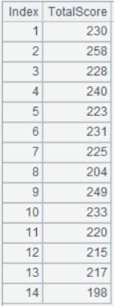
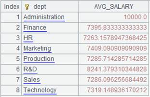

Description:
Attach the action of adding fields to a cursor and return the original cursor.
Syntax:
cs.derive(xi :Fi,…)
Note:
The function attaches a computation to cursor cs, which will compute expression xi on each record of cursor cs and make the results values of the new field Fi, and returns the table sequence consisting of the original fields and field Fi to the original cursor cs.
Parameter:
|
cs |
A curs |
|
Fi |
Field name. In this case, Fi cannot be of the same name as the existing fields in cs |
|
xi |
Expression, whose computed results are the field values |
Option:
|
@i |
Won’t generate a record if there is expression xi and its result is null (this won’t affect a record with null value in the original table sequence) |
Return value:
The original cursor cs
Example:
|
|
A |
|
|
1 |
=demo.cursor("select NAME,BIRTHDAY,HIREDATE from Employee") |
Return a cursor. |
|
2 |
=A1.derive(interval@y(BIRTHDAY,HIREDATE):EntryAge, age(HIREDATE):WorkAge) |
Attach an action to cursor A1 – add new fields EntryAge and WorkAge to it, and return a table sequence consisting of the original fields and the newly-added ones to the original cursor. |
|
3 |
=A1.fetch() |
Fetch data from cursor A1 on which A2’s computation is already executed:  |
|
4 |
=file("D:\\txt_files\\data1.txt").cursor@t() |
Below is the file data1.txt:
|
|
5 |
=A4.derive@i(SCORE:score_not_null) |
With @i option is present and if the SCORE value is null, the corresponding record won’t be generated.
|
|
6 |
=A4.fetch() |
Fetch data from cursor A4 on which A5’s computation is already executed:  |
Related functions: